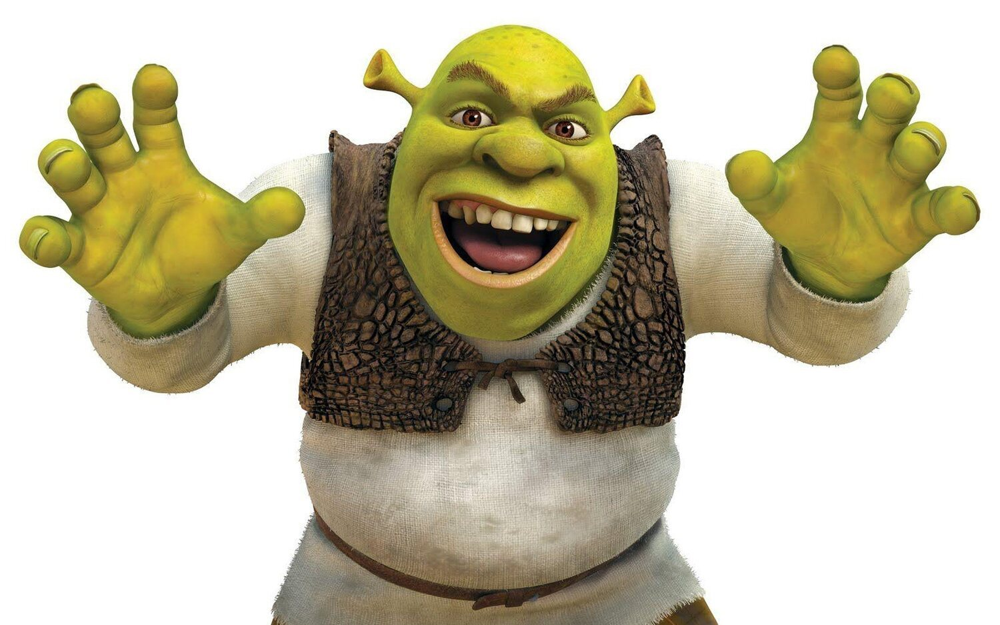
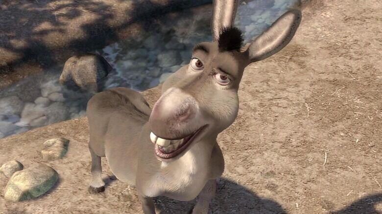
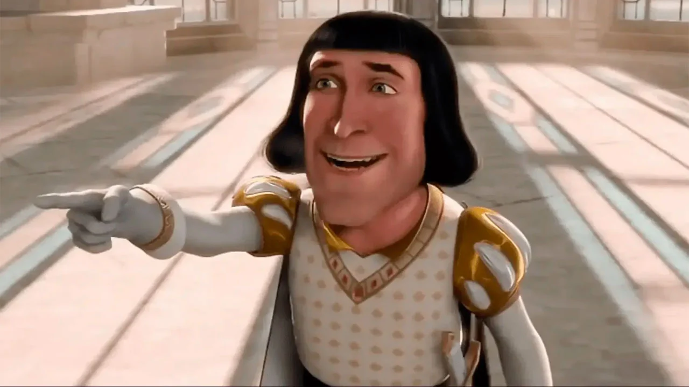

Shrek
Shrek viu només en el seu pantà/pantà enmig del bosc. Al principi, sembla que li agrada estar sol i
gaudeix espantar a la gent, però sense danyar-los. Encara que es desconeix l'origen, se suposa que
la majoria dels ogres danyen a les persones, però Shrek no és violent és un heroi.

Asno
La seva història comença quan Ase estava a punt de ser venut per una anciana als homes del senyor feudal
del regne Duloc, Lord Farquaad que buscaven criatures sobrenaturals per a tancar-los. Segons sembla, procedia
d'una granja desconeguda on residia al costat d'aquesta anciana.
Per sort, va aconseguir escapar i mentre fugia d'uns guàrdies, es va trobar amb Shrek, qui el va ajudar a
deslliurar-se dels soldats que li perseguien..

Lord Farquaad
Farquaad és un príncep de molt baixa alçada i despietat. Diverses vegades en la pel·lícula es comenta que ell compensa l'altura
del seu regne amb la seva baixa alçada. També es fan bromes en doble sentit, insinuant que el baix no és només la seva alçada.
